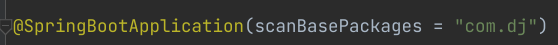

spring boot 中的spring factories 机制
Spring Boot 中有一种非常解耦的扩展机制：Spring Factories.这种机制实际上是仿照java中的SPI扩展机制实现的。
一、什么是SPI 机制
（1）什么是SPI
SPI全称Service Provider Interface，是Java提供的一套用来被第三方实现或者扩展的接口，它可以用来启用框架扩展和替换组件。 SPI的作用就是为这些被扩展的API寻找服务实现。
（2）SPI和API的使用场景
API （Application Programming Interface）在大多数情况下，都是实现方制定接口并完成对接口的实现，调用方仅仅依赖接口调用，且无权选择不同实现。 从使用人员上来说，API 直接被应用开发人员使用。
SPI （Service Provider Interface）是调用方来制定接口规范，提供给外部来实现，调用方在调用时则选择自己需要的外部实现。 从使用人员上来说，SPI 被框架扩展人员使用。
简单总结下Java SPI机制的思想。我们系统里抽象的各个模块，往往有很多不同的实现方案，比如 日志模块的方案，xml解析模块、jdbc模块的方案等。面向的对象设计里，我们一般推荐模块之间基于接口编程，模块之间不对实现类进行硬编码。一旦代码里涉及了具体的实现类，就违反了可插拔的原则，如果需要替换一种实现，就需要修改代码。为了实现在模块装配的时候能不在程序里动态指明，这就需要一种服务发现机制。
Java SPI 就是提供这样的一种机制：为某个接口寻找服务的实现的机制，有点类似IOC的思想，就是将装配的控制权移到程序之外，在模块化设计中这个机制很重要。
二、Spring Boot 中的SPI 机制
在Spring boot 中也有一种类似的加载机制，它在META-INFO/spring.factories文件中配置接口的实现类名称，然后在程序中读取这些配置文件并实例化。
这种自定义的SPI 机制就是Spring Boot Starter 实现的基础。
三、Spring Factories实现原理
spring -core 包里定义了SpringFactoriesLoader 类，这个类实现了检索META-INF/spring.factories文件，并获取指定接口的配置的功能。 在这个类中定义了两个对外的方法：
- loadFactories 根据接口类获取其实现类的实例，这个方法返回的是对象列表
- loadFactoryNames 根据接口获取其接口类的名称，这个方法返回的是类名的列表。
上面两个方法的关键都是从指定的ClassLoader中获取spring.factories文件，并解析得到类名列表，具体代码如下：
1
2
3
4
5
6
7
8
9
10
11
12
13
14
15
16
17
18
19
20
21
22
23
24
25
26
27
28
29
30
| private static Map<String, List<String>> loadSpringFactories(@Nullable ClassLoader classLoader) {
MultiValueMap<String, String> result = cache.get(classLoader);
if (result != null) {
return result;
}
try {
Enumeration<URL> urls = (classLoader != null ?
classLoader.getResources(FACTORIES_RESOURCE_LOCATION) :
ClassLoader.getSystemResources(FACTORIES_RESOURCE_LOCATION));
result = new LinkedMultiValueMap<>();
while (urls.hasMoreElements()) {
URL url = urls.nextElement();
UrlResource resource = new UrlResource(url);
Properties properties = PropertiesLoaderUtils.loadProperties(resource);
for (Map.Entry<?, ?> entry : properties.entrySet()) {
String factoryClassName = ((String) entry.getKey()).trim();
for (String factoryName : StringUtils.commaDelimitedListToStringArray((String) entry.getValue())) {
result.add(factoryClassName, factoryName.trim());
}
}
}
cache.put(classLoader, result);
return result;
}
catch (IOException ex) {
throw new IllegalArgumentException("Unable to load factories from location [" +
FACTORIES_RESOURCE_LOCATION + "]", ex);
}
}
|
从代码中可以看到，在这个方法中会遍历整个ClassLoader 中所有Jar包下的spring.factories文件，也就是我们可以在自己jar中配置spring.factories文件，不会影响到其他地方的配置，也不回被别人的配置覆盖。
spring.factories的是通过Properties解析得到的，所以我们在写文件中的内容都是按照下面这种方式配置的。
1
| com.xxx.interface=com.xxx.classname
|
四、spring-boot包中的spring.factories文件
在Spring Boot 的很多包中都能够找到spring.factories，下面就是spring-boot 包中的spring.factories文件。
1
2
3
4
5
6
7
8
9
10
11
12
13
14
15
16
17
18
19
20
21
22
23
24
25
26
27
28
29
30
31
32
33
34
35
36
37
38
39
40
41
42
43
44
45
46
47
48
49
50
51
52
53
54
55
| # PropertySource Loaders
org.springframework.boot.env.PropertySourceLoader=\
org.springframework.boot.env.PropertiesPropertySourceLoader,\
org.springframework.boot.env.YamlPropertySourceLoader
# Run Listeners
org.springframework.boot.SpringApplicationRunListener=\
org.springframework.boot.context.event.EventPublishingRunListener
# Error Reporters
org.springframework.boot.SpringBootExceptionReporter=\
org.springframework.boot.diagnostics.FailureAnalyzers
# Application Context Initializers
org.springframework.context.ApplicationContextInitializer=\
org.springframework.boot.context.ConfigurationWarningsApplicationContextInitializer,\
org.springframework.boot.context.ContextIdApplicationContextInitializer,\
org.springframework.boot.context.config.DelegatingApplicationContextInitializer,\
org.springframework.boot.web.context.ServerPortInfoApplicationContextInitializer
# Application Listeners
org.springframework.context.ApplicationListener=\
org.springframework.boot.ClearCachesApplicationListener,\
org.springframework.boot.builder.ParentContextCloserApplicationListener,\
org.springframework.boot.context.FileEncodingApplicationListener,\
org.springframework.boot.context.config.AnsiOutputApplicationListener,\
org.springframework.boot.context.config.ConfigFileApplicationListener,\
org.springframework.boot.context.config.DelegatingApplicationListener,\
org.springframework.boot.context.logging.ClasspathLoggingApplicationListener,\
org.springframework.boot.context.logging.LoggingApplicationListener,\
org.springframework.boot.liquibase.LiquibaseServiceLocatorApplicationListener
# Environment Post Processors
org.springframework.boot.env.EnvironmentPostProcessor=\
org.springframework.boot.cloud.CloudFoundryVcapEnvironmentPostProcessor,\
org.springframework.boot.env.SpringApplicationJsonEnvironmentPostProcessor,\
org.springframework.boot.env.SystemEnvironmentPropertySourceEnvironmentPostProcessor
# Failure Analyzers
org.springframework.boot.diagnostics.FailureAnalyzer=\
org.springframework.boot.diagnostics.analyzer.BeanCurrentlyInCreationFailureAnalyzer,\
org.springframework.boot.diagnostics.analyzer.BeanNotOfRequiredTypeFailureAnalyzer,\
org.springframework.boot.diagnostics.analyzer.BindFailureAnalyzer,\
org.springframework.boot.diagnostics.analyzer.BindValidationFailureAnalyzer,\
org.springframework.boot.diagnostics.analyzer.UnboundConfigurationPropertyFailureAnalyzer,\
org.springframework.boot.diagnostics.analyzer.ConnectorStartFailureAnalyzer,\
org.springframework.boot.diagnostics.analyzer.NoUniqueBeanDefinitionFailureAnalyzer,\
org.springframework.boot.diagnostics.analyzer.PortInUseFailureAnalyzer,\
org.springframework.boot.diagnostics.analyzer.ValidationExceptionFailureAnalyzer,\
org.springframework.boot.diagnostics.analyzer.InvalidConfigurationPropertyNameFailureAnalyzer,\
org.springframework.boot.diagnostics.analyzer.InvalidConfigurationPropertyValueFailureAnalyzer
# FailureAnalysisReporters
org.springframework.boot.diagnostics.FailureAnalysisReporter=\
org.springframework.boot.diagnostics.LoggingFailureAnalysisReporter
|
在日常工作中，我们可能需要实现一些SDK 或者Sring boot starter 给别人用的时候，我们就可以使用Factories机制，Factories机制可以让SDK或者Stater的使用只需要很少或者不需要进行配置，只需要在服务中引入我们的Jar包就即可。
五.Spring Boot 之spring.factories加载第三方的Bean
首先抛出一个问题：如果想要被Spring容器管理的Bean的路径不再Spring Boot 的包扫描路径下，怎么办呢？也就是如何去加载第三方的Bean 呢？
第一种方法：

第二种方法：